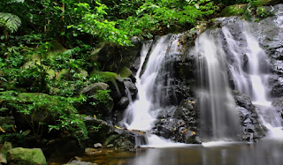

Air Terjun Rian
| Lokasi: | Sesayap, Kabupaten Tana Tidung, Kalimantan Utara |
Air Terjun memiliki tinggi sekitar 90 meter sampai ke puncaknya dan jatuh melalui bebatuan terjal gunung rian yang terdiri dari 7 tingkatan, namun hanya tingkat 1 dan 2 saja yang sering dikunjungi oleh wisatawan, karena untuk mencapai tingkatan lainnya diperlukan tenaga ekstra. Terletak di kaki Gunung Rian, Kabupaten Tana Tidung menjadikan air terjun ini bernama Air Terjun Rian. Air terjun ini memberikan suguhan alam yang begitu indah, dengan air jernih yang mengalir memberikan nuansa kesegaran yang luar biasa. Selain pemandangan alamnya yang indah, di Air terjun Riyan juga dapat dijumpai salah satu flora khas Kalimantan yaitu pohon Ulin (aeusideroxylon zwageri). Pohon Ulin merupakan vegetasi hutan tropis yang mempunyai nilai jual yang sangat tinggi karena kualitas kayunya yang memang berkualitas super.